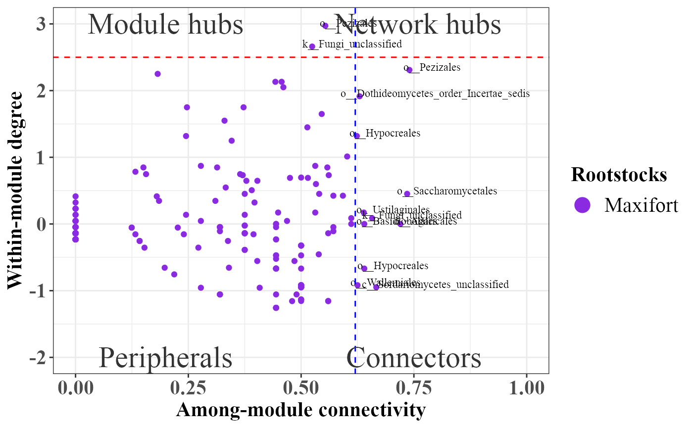

PhONA: Phenotype-OTU based Network Analyses
Ravin Poudel
2020-09-07
PhONA.RmdIntroduction
PhONA provides a framework to select a testable and manageable number of OTUs to support microbiome-based agriculture.
# installation # library(devtools) # devtools::install_github("ravinpoudel/PhONA", build_vignettes = TRUE, force = TRUE, auth = "5c5decd148f0378dcb762e7b14c3d1508ef49ba2") # Browse Vignettes to see the output as below. # browseVignettes("PhONA")
###### Load the data phyobj <- readRDS(system.file("extdata", "physeqobject.rds", package = "PhONA")) sparcc.cor <- read.delim(system.file("extdata", "cor_sparcc.out", package = "PhONA"), sep = "\t", header = T, row.names = 1) sparcc.pval <- read.delim(system.file("extdata", "pvals.txt", package = "PhONA"), sep = "\t", header = T, row.names = 1)
## Assign color to the taxa on the whole phyloseq object so that the same color is assigned for a taxon across treatments phyobj = taxacolor(phyobj = phyobj, coloredby = "Phylum")
PhONA( physeqobj = phyobj, cordata = sparcc.cor, pdata = sparcc.pval, model = "lm", iters=1, OTU_OTU_pvalue = 0.05, OTU_OTU_rvalue = 0.5, OTU_Phenotype_pvalue = 0.6, definePhenotype = "Marketable", defineTreatment = "Maxifort", PhenoNodecolor = "yellow", PhenoNodesize = 20, PhenoNodelabel = "Yield", nodesize = 10, Pheno2OTUedgecolor = "black", netlayout = layout.fruchterman.reingold )
## Total number of iterations used: 1
## 19.663 sec elapsedlibrary(PhONA) PhONA( physeqobj = phyobj, cordata = sparcc.cor, pdata = sparcc.pval, model = "lasso", iters=2, OTU_OTU_pvalue = 0.001, OTU_OTU_rvalue = 0.6, OTU_Phenotype_pvalue = 0.6, definePhenotype = "Marketable", defineTreatment = "Maxifort", PhenoNodecolor = "yellow", PhenoNodesize = 20, PhenoNodelabel = "Yield", nodesize = 10, Pheno2OTUedgecolor = "black", netlayout = layout.fruchterman.reingold )
## Total number of iterations used: 2## Warning in nominalTrainWorkflow(x = x, y = y, wts = weights, info = trainInfo, :
## There were missing values in resampled performance measures.
## 12.653 sec elapsed